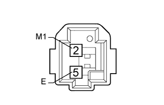

ИММОБИЛАЙЗЕР ДВИГАТЕЛЯ (для моделей с системой посадки и запуска) > Цепь контрольной лампы безопасности |
| 1.ВЫПОЛНИТЕ АКТИВНУЮ ДИАГНОСТИКУ В РЕЖИМЕ ACTIVE TEST С ПОМОЩЬЮ ПОРТАТИВНОГО ДИАГНОСТИЧЕСКОГО ПРИБОРА (КОНТРОЛЬНАЯ ЛАМПА БЕЗОПАСНОСТИ) |
Проверьте, что контрольная лампа безопасности горит, управляя ею в режиме "Active Test" (Нажмите здесь).
| Информация на дисплее прибора | Испытываемое устройство | Диапазон регулирования | Замечание по диагностике |
| Immobiliser Indicator | Контрольная лампа безопасности | ON (ВКЛ) / OFF (ВЫКЛ) | Испытание возможно при выполнении следующих условий:
|
|
| ||||
| OK | ||
| ||
| 2.ПРОВЕРЬТЕ КОНТРОЛЬНУЮ ЛАМПУ БЕЗОПАСНОСТИ В СБОРЕ |
|  |
Снимите контрольную лампу безопасности в сборе (Нажмите здесь).
Подайте напряжение аккумуляторной батареи между контактами контрольной лампы безопасности и убедитесь, что она загорается.
| Условия измерений | Заданные условия |
| Положительный вывод аккумуляторной батареи (+) → 2 (LP) Отрицательный (-) вывод аккумуляторной батареи → 5 (E) | Контрольная лампа безопасности загорается |
|
| ||||
| OK | |
| 3.ПРОВЕРЬТЕ ЖГУТ ПРОВОДОВ И РАЗЪЕМ (КОНТРОЛЬНАЯ ЛАМПА БЕЗОПАСНОСТИ – ЭБУ СЕРТИФИКАЦИИ И МАССА) |
Отсоедините разъем H23 лампы.
Отсоедините разъем G38 ЭБУ.
Измерьте сопротивление в соответствии со значениями, приведенными в таблице ниже.
| Контакты для подключения диагностического прибора | Условие | Заданные условия |
| H23-2 (LP) - G38-2 (IND) | Всегда | Менее 1 Ом |
| H23-5 (E) - масса | Всегда | Менее 1 Ом |
| H23-2 (LP) или G38-2 (IND) - масса | Всегда | 10 кОм или более |
|
| ||||
| OK | ||
| ||